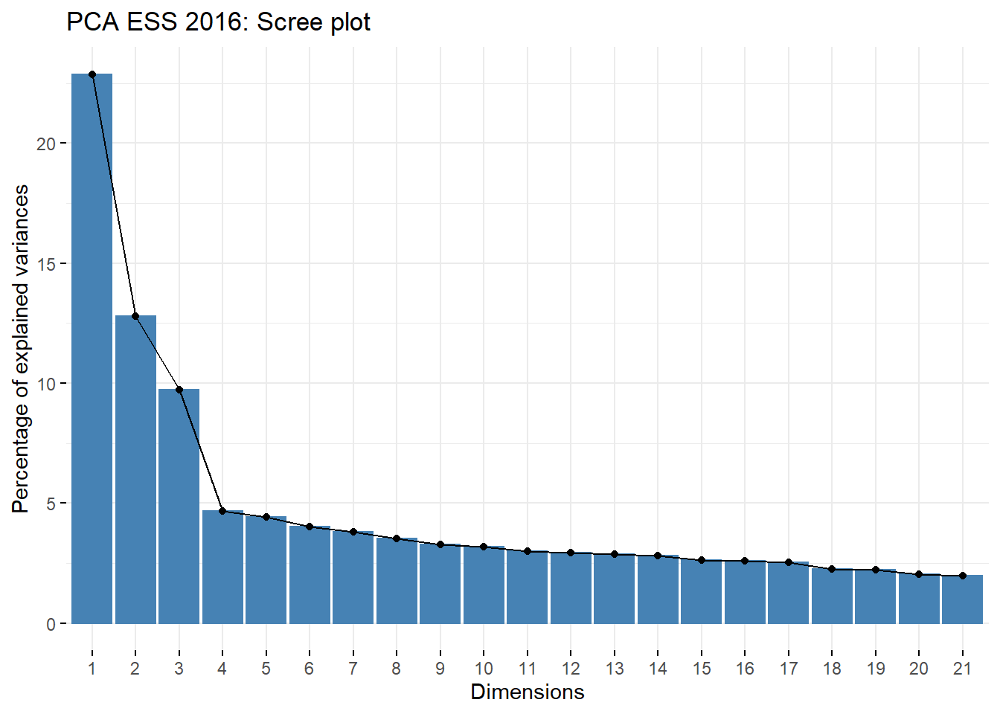
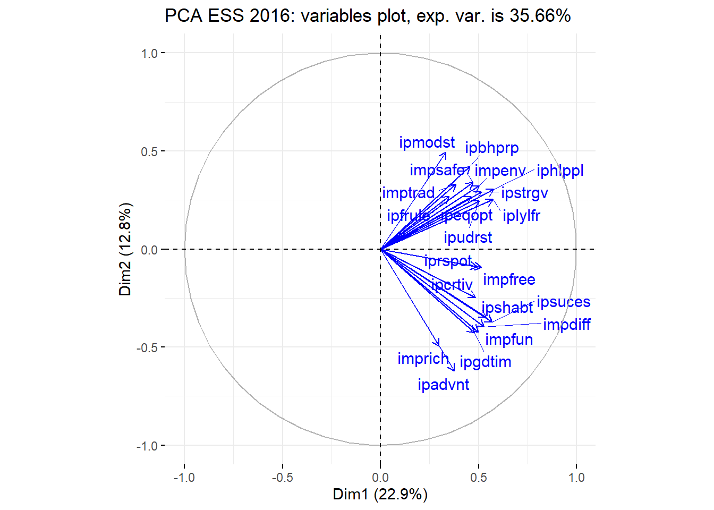

Capítol 7 Teoria Setmana 7
7.1 European Statisticall Survey 2016 (ESS)
library(FactoMineR)
library(factoextra)
ess <- load("www/data/ess16_8.RData")X<-essdata[,-1:-2]
Xs<-scale(X)
result <- PCA(Xs, graph = F)
fviz_screeplot(result, main="PCA ESS 2016: Scree plot", ncp=21)
fviz_pca_var(result, repel=T,
title="PCA ESS 2016: variables plot, exp. var. is 35.66%",
col.var ="blue")
CoordenadesPC <- predict(result, newdata=Xs)
head(CoordenadesPC$coord)## Dim.1 Dim.2 Dim.3 Dim.4 Dim.5
## 1 0.05587675 -0.78445549 -2.6542938 -1.7548698 1.96207258
## 2 -2.59615053 -1.14631785 -1.3477210 -1.8178399 0.52480225
## 3 -0.91825328 2.06662635 -0.3738472 -1.0165870 -2.49455226
## 4 0.92790773 -1.26918362 0.6469516 0.1678153 -0.03991936
## 5 1.08033473 0.09643711 -2.1028387 0.2559448 -1.33723820
## 6 0.90197585 2.88962053 1.0347817 0.5298216 0.46822160corCP <- cor(Xs,CoordenadesPC$coord)
corCP## Dim.1 Dim.2 Dim.3 Dim.4 Dim.5
## ipcrtiv 0.4850904 -0.2466303 -0.27896542 -0.23266697 0.32178101
## imprich 0.2983448 -0.4955241 0.45252734 -0.05873774 0.05502028
## ipeqopt 0.4617391 0.2670961 -0.32557454 -0.20129679 0.19142078
## ipshabt 0.5393657 -0.3483975 0.31343428 -0.27357813 0.19453073
## impsafe 0.4715346 0.3398959 0.33869121 -0.20931577 -0.20770968
## impdiff 0.5275476 -0.3972211 -0.23448945 0.16728347 0.17915319
## ipfrule 0.3486195 0.2688416 0.42811230 0.36713962 0.30471563
## ipudrst 0.5047132 0.2456069 -0.39684700 0.06162487 0.31674151
## ipmodst 0.3340044 0.4938287 -0.06293401 0.32049269 0.14915976
## ipgdtim 0.4780183 -0.4264057 -0.18670616 0.21052200 -0.37456250
## impfree 0.5143234 -0.0926020 -0.26653410 -0.26626859 -0.22923968
## iphlppl 0.5765880 0.3046963 -0.33534853 -0.03841315 0.00315128
## ipsuces 0.5699053 -0.3712434 0.34858548 -0.18018895 0.08902413
## ipstrgv 0.5138666 0.2904064 0.25720280 -0.13212796 -0.26157469
## ipadvnt 0.3775718 -0.6221513 -0.11053826 0.28812685 0.09685584
## ipbhprp 0.4557116 0.4223522 0.32174890 0.22660341 0.07768646
## iprspot 0.4924489 -0.0909169 0.49381765 -0.08019413 0.01327728
## iplylfr 0.5737709 0.2523066 -0.30833537 -0.04585277 -0.17154264
## impenv 0.5035905 0.3235171 -0.18851825 -0.11526224 -0.10723265
## imptrad 0.3834979 0.3320727 0.32592300 0.19435975 -0.19122251
## impfun 0.4992021 -0.4226673 -0.18968646 0.36359478 -0.30496134- ipcrtiv: Important to think new ideas and being creative
- imprich: Important to be rich, have money and expensive things
- ipeqopt: Important that people are treated equally and have equal opportunities
- ipshabt: Important to show abilities and be admired
- impsafe: Important to live in secure and safe surroundings
- impdiff: Important to try new and different things in life
- ipfrule: Important to do what is told and follow rules
- ipudrst: Important to understand different people
- ipmodst: Important to be humble and modest, not draw attention
- ipgdtim: Important to have a good time
- impfree: Important to make own decisions and be free
- iphlppl: Important to help people and care for others well-being
- ipsuces: Important to be successful and that people recognize achievements
- ipstrgv: Important that government is strong and ensures safety
- ipadvnt: Important to seek adventures and have an exciting life
- ipbhprp: Important to behave properly
- iprspot: Important to get respect from others
- iplylfr: Important to be loyal to friends and devote to people close
- impenv: Important to care for nature and environment
- imptrad: Important to follow traditions and customs
- impfun: Important to seek fun and things that give pleasure
vars <- c(
"Important to think new ideas and being creative"
,"Important to be rich, have money and expensive things"
,"Important that people are treated equally and have equal opportunities"
,"Important to show abilities and be admired"
,"Important to live in secure and safe surroundings"
,"Important to try new and different things in life"
,"Important to do what is told and follow rules"
,"Important to understand different people"
,"Important to be humble and modest, not draw attention"
,"Important to have a good time"
,"Important to make own decisions and be free"
,"Important to help people and care for others well-being"
,"Important to be successful and that people recognize achievements"
,"Important that government is strong and ensures safety"
,"Important to seek adventures and have an exciting life"
,"Important to behave properly"
,"Important to get respect from others"
,"Important to be loyal to friends and devote to people close"
,"Important to care for nature and environment"
,"Important to follow traditions and customs"
,"Important to seek fun and things that give pleasure")
# SEgunda componente
corCPDesc<-data.frame(CP1=corCP[,1],CP2=corCP[,2],VAR = vars)
corCPDesc[order(corCPDesc[,2]),]## CP1 CP2 VAR
## ipadvnt 0.3775718 -0.6221513 Important to seek adventures and have an exciting life
## imprich 0.2983448 -0.4955241 Important to be rich, have money and expensive things
## ipgdtim 0.4780183 -0.4264057 Important to have a good time
## impfun 0.4992021 -0.4226673 Important to seek fun and things that give pleasure
## impdiff 0.5275476 -0.3972211 Important to try new and different things in life
## ipsuces 0.5699053 -0.3712434 Important to be successful and that people recognize achievements
## ipshabt 0.5393657 -0.3483975 Important to show abilities and be admired
## ipcrtiv 0.4850904 -0.2466303 Important to think new ideas and being creative
## impfree 0.5143234 -0.0926020 Important to make own decisions and be free
## iprspot 0.4924489 -0.0909169 Important to get respect from others
## ipudrst 0.5047132 0.2456069 Important to understand different people
## iplylfr 0.5737709 0.2523066 Important to be loyal to friends and devote to people close
## ipeqopt 0.4617391 0.2670961 Important that people are treated equally and have equal opportunities
## ipfrule 0.3486195 0.2688416 Important to do what is told and follow rules
## ipstrgv 0.5138666 0.2904064 Important that government is strong and ensures safety
## iphlppl 0.5765880 0.3046963 Important to help people and care for others well-being
## impenv 0.5035905 0.3235171 Important to care for nature and environment
## imptrad 0.3834979 0.3320727 Important to follow traditions and customs
## impsafe 0.4715346 0.3398959 Important to live in secure and safe surroundings
## ipbhprp 0.4557116 0.4223522 Important to behave properly
## ipmodst 0.3340044 0.4938287 Important to be humble and modest, not draw attention